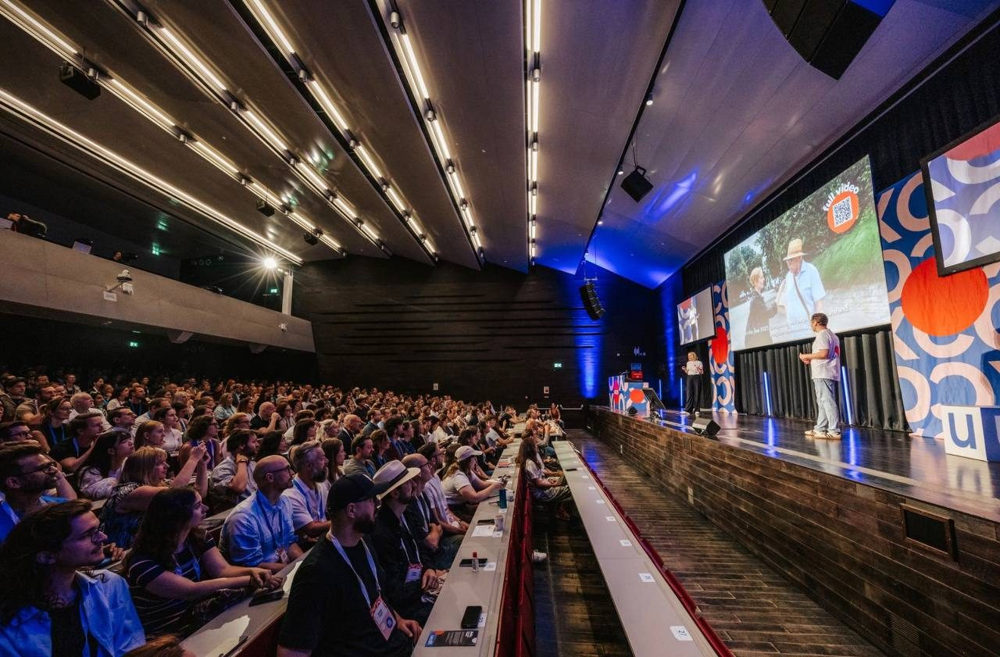
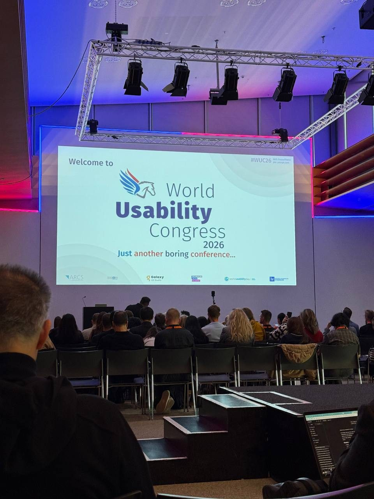
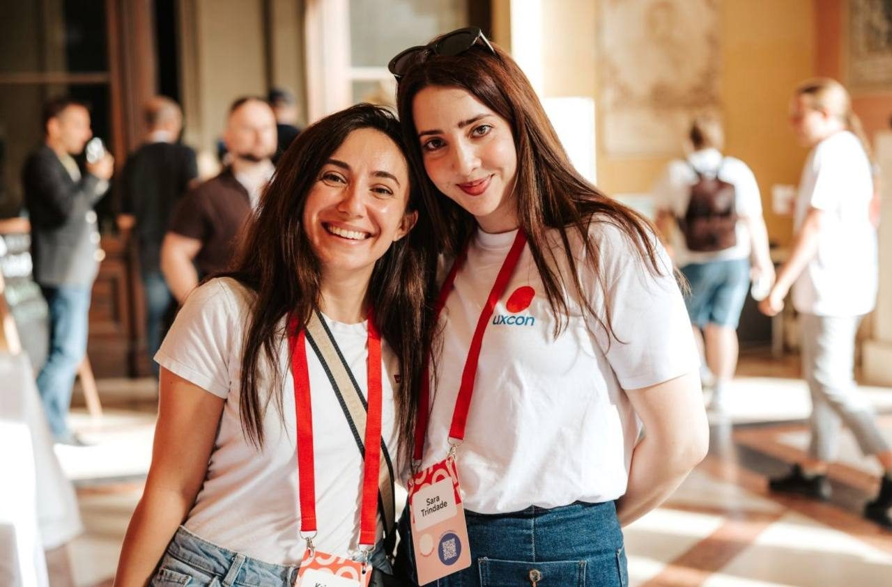
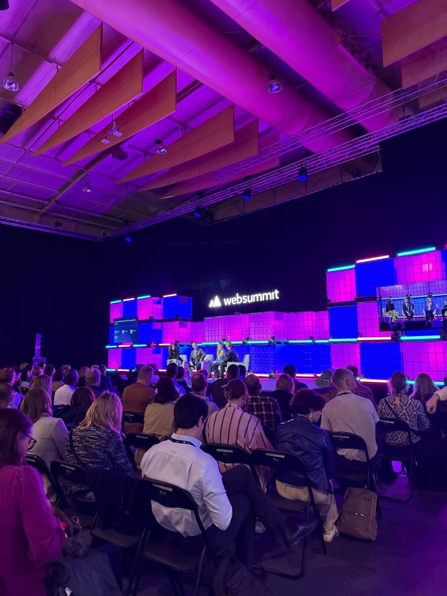
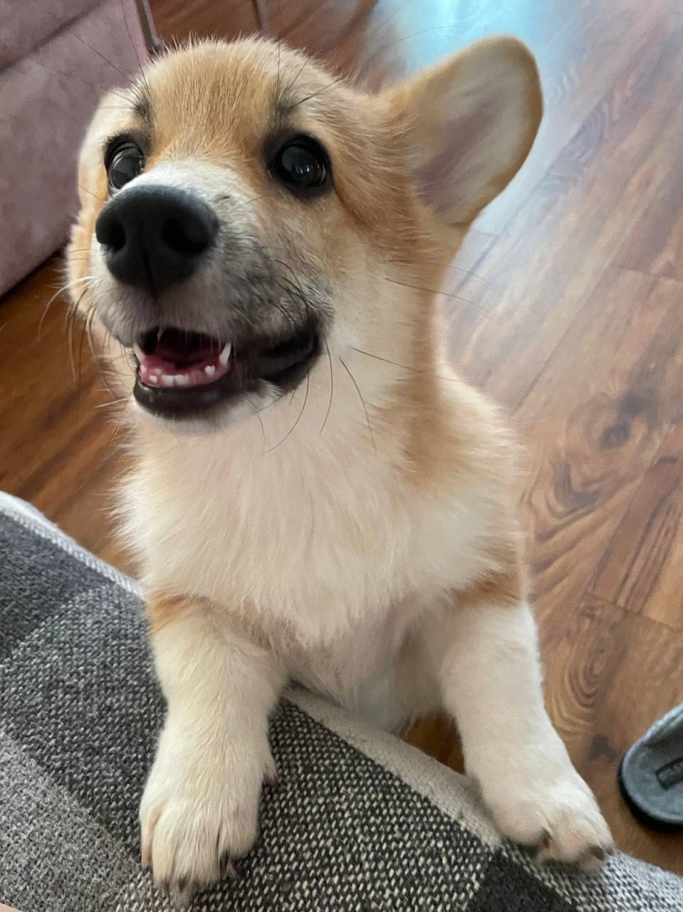

About me
I'm passionate about learning, creating, and staying active.
I love photography and videography and spending time outdoors - whether it's at a lake, hiking, or traveling.
One of my favorite companions is my Welsh Corgi 🐶, Yasmin, who joins me on many adventures.

Professional background
Lead UI/UX Designer at CGM CompuGroup Medical, previously Head of Design at hello again and Senior Product Designer at Checkin.com. My work has been shipped to users of Ryanair, Entain, Ooredoo, Müller, Deichmann - and 55K+ medical staff across Austria.
Off screen
You'll often find me at conferences, learning from inspiring people and connecting with the minds behind great ideas.





Meet the team
Yasmin, Chief Walk Officer
Welsh Corgi, my longest-running side project and the only stakeholder who never skips a daily stand-up. Release notes below.
- Role
- Chief Walk Officer. Part-time QA for every sofa in the flat.
- Uptime
- 99.9%, excluding naps (scheduled maintenance, several times a day).
- Accepted input
- Treats, belly rubs and the keyword "walk". Spelling it out stopped working in v0.8.
- Response time
- 0 ms to the sound of the fridge door. Response to "come back" is still being optimised.
- Test coverage
- Sniffs 100% of every new environment before sign-off.
- Known issues
- Ignores sit when a squirrel is in scope. Low ground clearance by design.
- Changelog
- Added zoomies. Improved cuddle API. Deprecated personal space.